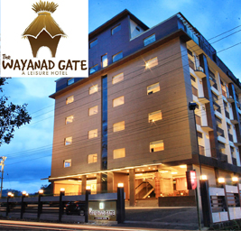

	<?php
	require_once('../../../wp-load.php');
	include dirname( __FILE__ ) .'/header.php' ;
	global $wpdb;
	?>


    <div id="main-content">

        <div class="widget-area-1">

            <!-- widget -->

            <div class="stripe-box">

                <div class="wrapper">

                    <div class="right-color"></div>

                    <div class="social-links-container">
                        <div class="social-links-wrapper">
                            <ul class="social-links clearfix">
                                <li>
                                    <a href="#" class="fa fa-facebook" target="_self" title="Facebook"></a>
                                </li>

                                <li>
                                    <a href="#" class="fa fa-twitter" target="_self" title="Twitter"></a>
                                </li>

                                <li>
                                    <a href="#" class="fa fa-google-plus" target="_self" title="Google+"></a>
                                </li>

                                <li>
                                    <a href="indexd784.html?feed=rss2" class="fa fa-rss" target="_self" title="Rss"></a>
                                </li>

                                <li>
                                    <a href="#" class="fa fa-flickr" target="_self" title="Flickr"></a>
                                </li>

                                <li>
                                    <a href="#" class="fa fa-tumblr" target="_self" title="Tumblr"></a>
                                </li>

                                <li>
                                    <a href="skype:#?call" class="fa fa-skype" target="_self" title="Skype"></a>
                                </li>

                                <li>
                                    <a href="#" class="fa fa-pinterest" target="_self" title="Pinterest"></a>
                                </li>

                                <li>
                                    <a href="#" class="fa fa-youtube" target="_self" title="Youtube"></a>
                                </li>
                            </ul>
                            <!-- social-links -->
                        </div>
                        <!-- social-links-wrapper -->
                        <span class="triangle-1st"></span>
                        <span class="triangle-2nd"></span>
                    </div>
                    <!-- social-links-container -->

                    <div class="weather-widget-wrapper">
                        <span class="triangle-1st"></span>
                        <span class="triangle-2nd"></span>
                        <div class="widget widget_awesomeweatherwidget masonry-brick">
                            <div class="awesome-weather-wrap awecf custom awe_with_stats awe_wide" id="awesome-weather-vietnam">
                                <div class="awesome-weather-header">
                                    No Data </div>
                                <div class="awesome-weather-current-temp">
                                    <i class="icon-weather wi wi-day-sunny"></i>
                                </div>
                            </div>
                        </div>
                        <!-- weather-widget-wrapper -->

                    </div>
                    <!-- wrapper -->

                </div>
                <!-- stripe-box -->

            </div>
            <!-- widget-area-1 -->

            <div class="bn-box">

                <div class="wrapper clearfix">

                    <div class="kp-headline-wrapper clearfix">
                        <span class="kp-headline-title">BREAKING NEWS</span>
                        <div class="kp-headline clearfix">
                            <dl class="ticker-1 clearfix" data-speed="0.07">
                                <dt style="display: none;">ticket title</dt>
                                <dd><a href="indexc052.html?p=888" title="Villagers fight off Boko Haram militants">Villagers fight off Boko Haram militants</a></dd>
                                <dd><a href="indexe0d2.html?p=742" title="Haute Couture fact file bibendum">Haute Couture fact file bibendum</a></dd>
                                <dd><a href="indexb648.html?p=773" title="J-Lo’s divisive Versace dress-trouser hybrid">J-Lo’s divisive Versace dress-trouser hybrid</a></dd>
                                <dd><a href="index0745.html?p=532" title="The Model Trainer: how to get legs like Gisele">The Model Trainer: how to get legs like Gisele</a></dd>
                                <dd><a href="index336f.html?p=778" title="Extreme places to visit in the U.S.">Extreme places to visit in the U.S.</a></dd>
                                <dd><a href="index61f2.html?p=693" title="Jodie Foster marries Alexandra Hedison">Jodie Foster marries Alexandra Hedison</a></dd>
                            </dl>
                        </div>
                    </div>
                    <!-- kp-headline-wrapper -->

                </div>
                <!-- wrapper -->

            </div>
            <!-- bn-box -->

            <section class="main-section">
                <div class="wrapper clearfix">
                    <div class="main-col pull-left">
                        <section id="post-613" class="entry-box post-613 post type-post status-publish format-video has-post-thumbnail hentry category-fashion category-post-format-video tag-fomatted tag-kopa tag-magazine tag-news-2 post_format-post-format-video">
                            <header>
								<h2 class="entry-title">News and Events Read more</h2>
											<span class="entry-date pull-left"><i class="fa fa-pencil-square-o"></i>July 30, 2014</span>
									<span class="entry-meta pull-left">&nbsp;/&nbsp;</span>
								
								<span class="entry-author pull-left">By <a href="index3eae.html?author=5" title="Posts by Kim Dinh Van" rel="author">Kim Dinh Van</a></span>
							</header>

                            <div class="entry-thumb">
                                 </div>
                            <!-- entry thumb -->

                            <div class="entry-content clearfix">
                                <!-- left-col -->
                                <p>
                                    It just never happened over a cup of tea. We the alumni of MES Raja Residential School& Junior College, NIT, Kallanthode, Calicut were anxiously looking forward to bring all the erstwhile students on a common platform. After relentless initiative and strenuous efforts, we were able to form an association of our alumni, MESRA(MES Raja Residential School and Junior College Alumni Association)in 2010.
                                </p>
                                <p>
                                    It would not have materialised but for the cooperation and support from all concerned. Now,this is our humble endeavour to project ourselves, interact and coordinate programs and events utilising the infinite possibilities of the information technology. Here we are, under a single umbrella all set to closely knit the knights of MESRA through the net.
                                </p>
                                <p>
                                    We have the dedicated google group for our members</br>
                                    <a href="">http://groups.google.com/group/mesra_kallanthode </a>and </br>
                                    our Facebook page</br>
                                    <a href="">https://www.facebook.com/myschoolmesraja </a>to keep us connected
                                </p>
                                <p>
                                    The association is a registered body per the Societies registration act 1860 w.e.f 22nd February, 2012. The association shall strive to work for the welfare of the members. Any alumnus of the said institutions is eligible to be members of the association after fulfilling the norms of the general body.

                                </p>
                            </div>
                            <!-- pagination in post -->

                        </section>

                    </div>
                    <!-- main-col -->

                    <div class="sidebar widget-area-2 pull-left">

                        <div class="widget kopa-article-list-1-widget clearfix">
                            <h4 class="widget-title">Sponsored by </h4>
                            <article class="last-item clearfix">
                                <div class="entry-thumb">
                                    <a href="index475a.html?p=569" title="Star Wars: &#8216;Day one&#8217; shooting begins">
                                         </a>
                                </div>
                                <!-- entry-thumb -->
                                <!-- entry-content -->
                            </article>
                            <article class="last-item clearfix">
                                <div class="entry-thumb">
                                    <a href="index475a.html?p=569" title="Star Wars: &#8216;Day one&#8217; shooting begins">
                                         </a>
                                </div>
                                <!-- entry-thumb -->
                                <!-- entry-content -->
                            </article>
                        </div>
                    </div>
                    <!-- widget-area-2 -->

                    <div class="clear"></div>

                </div>
                <!-- wrapper -->

            </section>
            <!-- main-section -->
        </div>
        <!-- main-content -->
   <?php include './footer.php' ?>